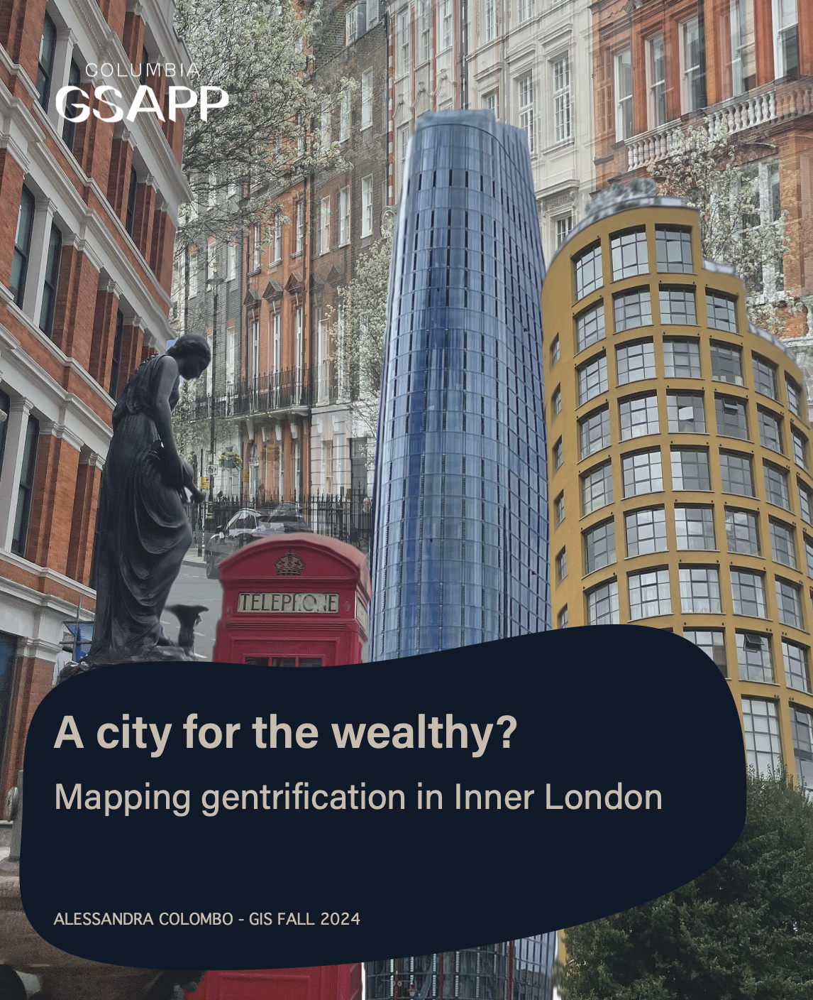
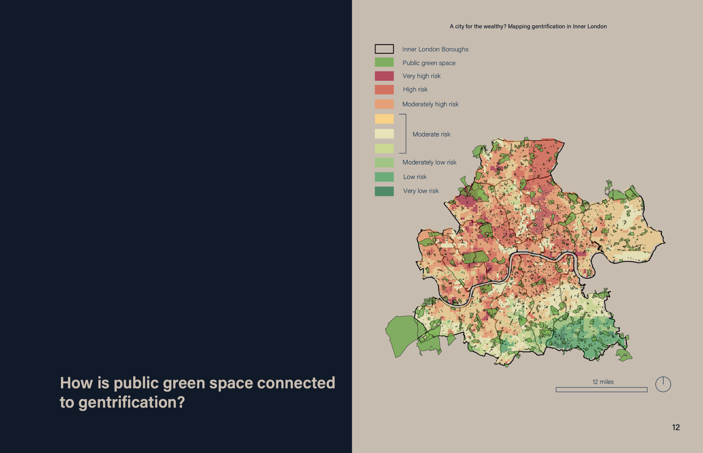
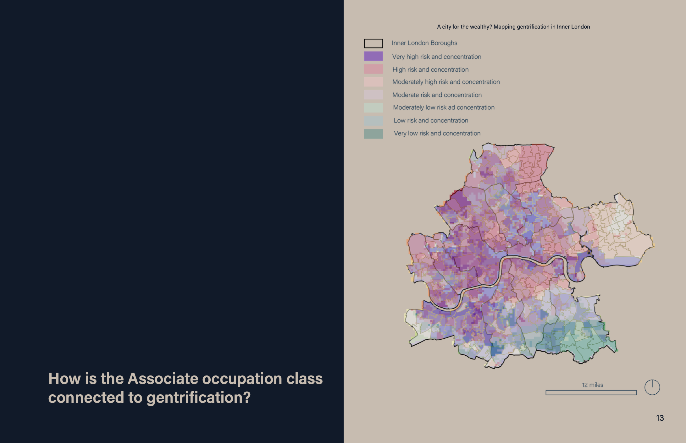
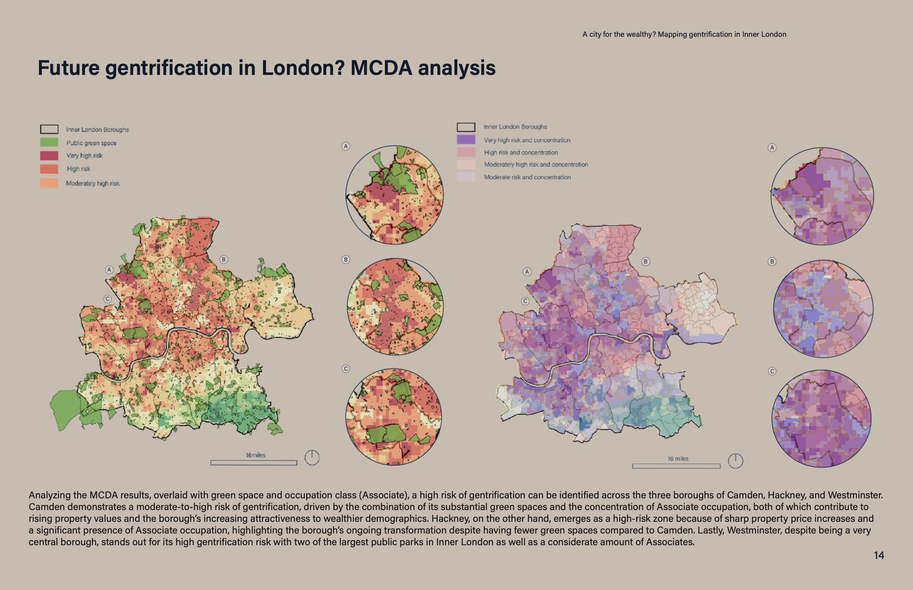

Where is gentrification happening within Inner London? How are public green space and occupation connected to gentrification?
The geographic scope of this project is Inner London, UK. This city is prone to significant changes in demographics and property values and the term "gentrification" was coined by Ruth Glass when studying social changes in London neighborhoods. The primary study area units are Lower and Middle layer Super Output Areas (MSOA, LSOA).



